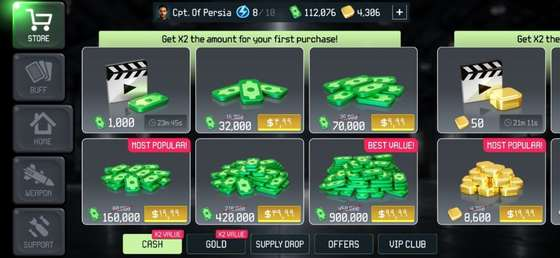
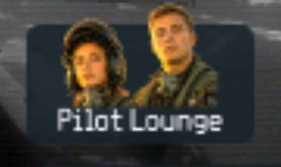
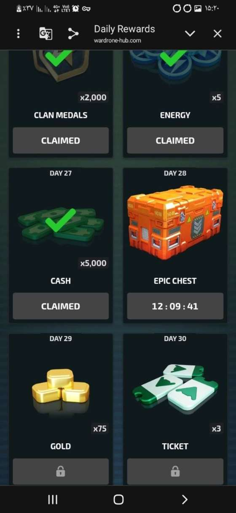
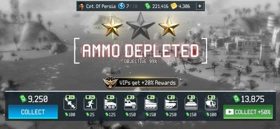
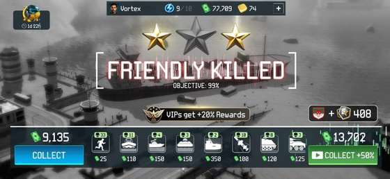
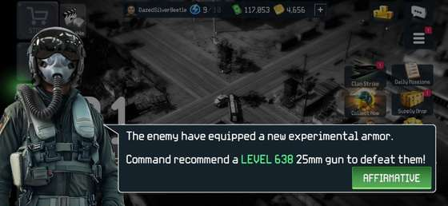
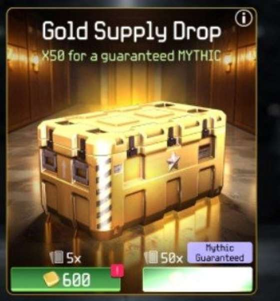
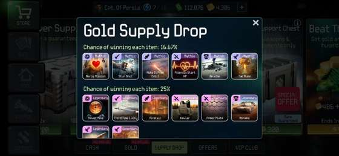
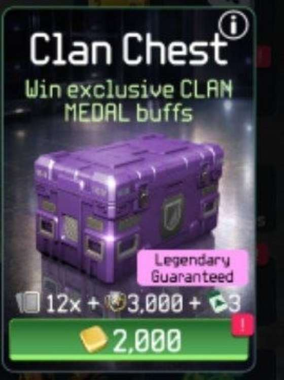
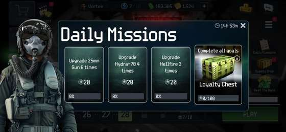

اگر بخواهم War Drone را اصولی یاد بگیرم، از کجا شروع کنم؟
این صفحه برای کسی نوشته شده که میخواهد دلیل هر کار را بفهمد، نه اینکه فقط چند اصطلاح حفظ کند. هر بخش با یک سؤال واقعی شروع میشود و بعد قدمبهقدم توضیح میدهیم چه کاری انجام بدهی، چرا انجامش بدهی و به چه چیزی دقت کنی. هرجا نام انگلیسی لازم باشد، فقط نامی را که داخل خود بازی میبینی در پرانتز میآوریم.
پول سبز و طلا چه فرقی دارند و هرکدام را کجا خرج کنم؟
در War Drone دو منبع اصلی داری. پول سبز (Cash) برای ارتقای سلاحها استفاده میشود. طلا (Gold) کمیابتر است و بیشتر برای بازکردن جعبههای مهم و بعضی فعالیتهای کلن ارزش دارد. اگر تازه شروع کردهای، مهمترین نکته این است که این دو را مثل هم خرج نکنی.

بالای صفحه، مقدار پول سبز و طلا را جداگانه میبینی. پول سبز برای ارتقای سلاحهاست و طلا را بهتر است برای خریدهای مهمتر نگه داری.
قاعده ساده: پول سبز را برای قویترشدن سلاحها خرج کن؛ طلا را ذخیره کن تا برای جعبههای ارزشمند یا نیازهای کلنی مصرف شود.
02 · جمعکردن منابع
بدون خرج پول واقعی، هر روز از کجا پول و طلا بگیرم؟
قبل از اینکه ساعتها یک مرحله را تکرار کنی، اول پاداشهای رایگان را بگیر. این پاداشها شاید در یک روز خیلی بزرگ به نظر نرسند، اما در چند هفته مقدار قابلتوجهی طلا و پول جمع میکنند.
1
پاداش ویدئویی دورهای: در نمونه ثبتشده، حدود هر ۶ ساعت میتوانی با دیدن ویدئو ۵۰ طلا و ۱۰۰۰ پول دریافت کنی. اگر ویدئو برایت ظاهر نمیشود، معمولاً مشکل از دسترسی شبکه است.
2
سالن خلبان (Pilot Lounge): از صفحه اصلی بازی وارد این بخش شو. این گزینه تو را به وباپ رسمی بازی میبرد.
3
پاداش روزانه (Daily Rewards): داخل وباپ، جایزه روزانه را دریافت کن. در نسخههای جدید ممکن است لازم باشد وباپ را روی گوشی نصب کنی تا همه پاداشها در دسترس باشند.

در صفحه اصلی، این گزینه همان سالن خلبان (Pilot Lounge) است.

نمونه صفحه پاداش روزانه؛ جایزه میتواند شامل پول، طلا یا آیتمهای دیگر باشد.
راه سوم، بازیکردن خود مرحلههاست. از اجرای مرحله پول میگیری و از انجام ماموریتهای همان مرحله میتوانی طلا هم دریافت کنی.
03 · فارم پول
چطور یک مرحله را بارها بازی کنم و هر بار پول خوبی بگیرم؟
وقتی به یک مرحله مناسب برای جمعکردن پول رسیدی، عجله نکن آن را ۱۰۰٪ تمام کنی. اگر مرحله را کامل کنی، ممکن است فرصت تکرار همان پاداش خوب را از دست بدهی. روش امنتر این است که مرحله را تقریباً کامل کنی ولی آخرین دشمن یا هدف را زنده بگذاری.
1
مرحله را تا حدود ۹۸–۹۹٪ جلو ببر و تقریباً همه دشمنها را از بین ببر.
2
آخرین دشمن یا هدفی را که باعث کاملشدن مرحله میشود زنده بگذار.
3
اجازه بده ماموریت با شکست تمام شود. پولی که در همان دور جمع کردهای را میگیری و مرحله برای تکرار باقی میماند.
4
اگر گزینه ویدئویی Collect +50% نمایش داده شد، با دیدن ویدئو میتوانی پاداش همان دور را ۵۰٪ بیشتر کنی.

مرحله ۲۸ یکی از نمونههای بسیار خوب برای فارم سریع پول است.

مرحله ۳۹ هم پاداش بالایی دارد، اما زمان هر دور و قدرت سلاحهایت را هم باید در نظر بگیری.
قبل از کاملکردن مرحله مکث کن: اگر هنوز به این مرحله برای فارم نیاز داری، آخرین دشمن را نکش.
04 · گیر نکردن در مرحله سخت
چرا بعضی مرحلهها ناگهان خیلی سختتر میشوند؟
سختی بازی همیشه آرام و خطی بالا نمیرود. معمولاً نزدیک عبور از بازههای دهتایی، دشمنها زره بیشتری میگیرند و همان دشمنی که قبلاً راحت از بین میرفت، ناگهان تیر و موشک بیشتری لازم دارد. اگر بدون ذخیره پول و بدون آمادهکردن سلاحها جلو بروی، ممکن است در مرحله بعد گیر کنی.

خود بازی گاهی هشدار میدهد که دشمن زره جدید دارد و سطح بالاتری برای مسلسل 25mm پیشنهاد میکند.
قبل از عبور از ۱۰ به ۱۱، ۲۰ به ۲۱، ۳۰ به ۳۱ و بازههای مشابه، چند دور بیشتر روی مرحله راحت بمان، سلاحها را تقویت کن و مقداری پول ذخیره داشته باش. وقتی مرحله فعلی واقعاً برایت آسان شد، زمان مناسبی برای فکرکردن به مرحله بعد است.
قرار نیست همیشه جلو بروی. گاهی بهترین تصمیم این است که چند روز یا چند هفته روی یک مرحله خوب بمانی و منابع جمع کنی.
05 · خرجکردن طلا
طلاهایم را روی کدام جعبه خرج کنم؟
همه جعبههای جایزه ارزش یکسانی ندارند. دو گزینه مهمی که باید بشناسی، جعبه طلایی و جعبه بنفش کلن هستند. انتخاب بین این دو بستگی دارد که بیشتر دنبال قویترشدن حساب خودت هستی یا فعالیت کلنی هم برایت اهمیت دارد.
اگر کارتهای قوی برای خودم میخواهم: جعبه طلایی
در گزینه بزرگ جعبه طلایی، با ۶۰۰۰ طلا ۵۰ کارت دریافت میکنی و طبق نمونه ثبتشده حداقل یک کارت از رده اسطورهای (Mythic) تضمین شده است. ۵۰ کارت به معنی ۵۰ نوع کارت متفاوت نیست؛ ممکن است یک کارت چند بار تکرار شود.

منظور از «جعبه طلایی» در این آموزش همین Gold Supply Drop است.

نمونهای از کارتهای سطح بالاتر که از جعبه طلایی میتوان دریافت کرد.
اگر برای کلن هم بازی میکنم: جعبه بنفش کلن
جعبه بنفش کلن با ۲۰۰۰ طلا، ۱۲ کارت، حداقل یک کارت افسانهای (Legendary)، ۳۰۰۰ مدال کلن و ۳ بلیت رقابت کلن میدهد. بنابراین فقط یک جعبه کارت نیست؛ برای بازیکنی که در کلن فعال است ارزش بیشتری دارد.

این همان جعبه بنفش کلن (Clan Chest) است.در این جعبه کارتهای مخصوص افزایش مدال کلن هم دیده میشوند.
06 · ارتقای سلاحها
چطور سلاحها را ارتقا بدهم که پولم هدر نرود؟
فقط به عدد Level نگاه نکن. مهمتر از برابرکردن سطح سلاحها این است که پولت را جایی خرج کنی که بیشترین تاثیر را در بازی واقعی دارد. در بیشتر شرایط، مسلسل 25mm پرمصرفترین سلاح توست و معمولاً باید جلوتر از بقیه نگه داشته شود.
در این تصویر میبینی سطح سه سلاح برابر نیست. عدد Level و هزینه ارتقا را با هم ببین، نه اینکه فقط دنبال مساویکردن Levelها باشی.
1
اولویت را به مسلسل 25mm بده. چون در بیشتر مرحلهها دائماً از آن استفاده میکنی.
2
هایدرا و هلفایر را بیهدف بالا نبر. وقتی ماموریت روزانه یا یک مرحله خاص لازمشان دارد، ارتقا بده.
3
هزینه ارتقا را مقایسه کن. وقتی هزینه ارتقای 25mm و هایدرا به هم نزدیک میشود، معمولاً وقت خوبی است که تعادل خرجکردن پول را دوباره بررسی کنی.
4
اگر مرحله راحت شده، همه پول را خرج نکن. مقداری ذخیره کن تا در مرحله سخت بعدی دستت بسته نباشد.
یادت باشد: قدرت واقعی فقط از Level نمیآید؛ کارتها، مهمات، نوع دشمن و مهارت بازیکردن هم اثر دارند.
07 · ماموریتهای روزانه
وقتی ماموریت روزانه از من ارتقا یا بازکردن جعبه میخواهد، چه کار کنم؟
دو نوع ماموریت روزانه معمولاً وقتی منابع کم داری آزاردهنده میشوند: ارتقای سلاح و بازکردن جعبه. راه حل این است که همیشه همه منابع را همان لحظه خرج نکنی.

نمونه ماموریتهای روزانه؛ بعضی روزها از تو ارتقا یا بازکردن جعبه میخواهند.
اگر ماموریت امروز را تمام کردهای و در حال فارم هستی، مقداری پول برای فردا نگه دار. همچنین اگر با ۱۰۰٪ کردن یک مرحله جعبه جایزه میگیری، لازم نیست همیشه همان لحظه آن را باز کنی؛ میتوانی برای روزی نگه داری که ماموریت «بازکردن جعبه» داری و طلاهایت را بیدلیل خرج نکنی.
08 · چیدمان کارتها
برای ردکردن مرحله و برای فارم، باید کارتها را یکسان بچینم؟
نه. وقتی یک مرحله برایت سخت است، کارتهایی را انتخاب کن که قدرت، مهمات و دوام تو را بیشتر میکنند. وقتی همان مرحله برایت آسان شده و فقط میخواهی سریعتر پول جمع کنی، کارتهای سرعت و بازده میتوانند انتخاب بهتری باشند.
برای مرحله سخت، کارتهایی که قدرت و مهمات را بالا میبرند ارزش بیشتری دارند.برای فارم مرحله راحت، سرعت و بازده مهمتر میشوند.
یک سؤال ساده از خودت بپرس: «الان میخواهم این مرحله را رد کنم یا میخواهم آن را سریع تکرار کنم؟» جواب همین سؤال مشخص میکند چه نوع کارتهایی برایت مناسبترند.